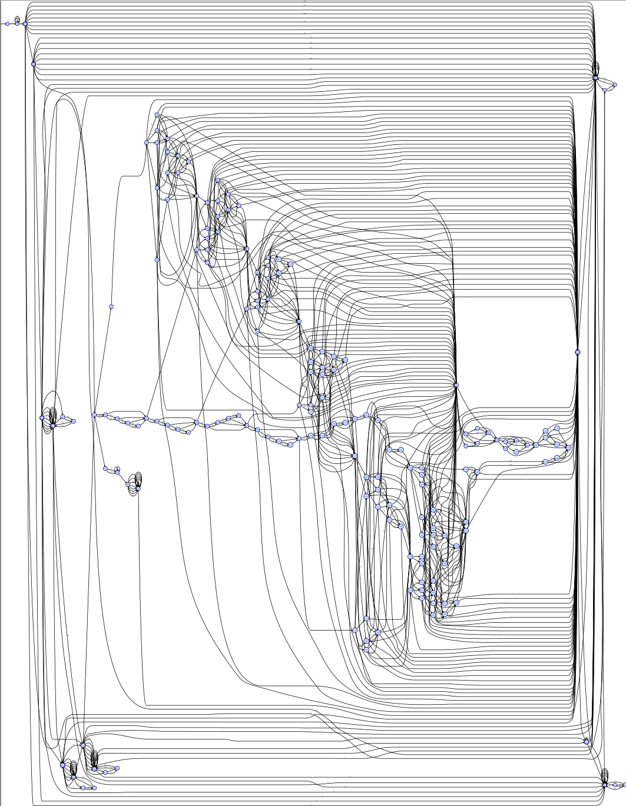

36858570256415121325678741627137383137485170961739808804878081Can you guess what this number means? I assure you that it will be clear, if you read this page through! --日本語解説 at sw@mac.info
Introduction
RANS is a library, an implementation of an Abstract Numeration System (ANS) on a regular language. RANS's concept is very simple, just calculates the number from the given string on a regular language. In other words,
- RANS provides the minimal perfect hash function that maps string to positive integer.
- RANS provides the 'val' that is the bijective function (one-to-one correspondence) from N onto a language.
- and 'rep' is the inverse function of 'val'.
- RANS makes the set of acceptable string totally ordered by the Lexicographic order.
val("")==0, rep(2)=="b", val("c")==3, rep(5)=="ab", val("aaa")=9
These definition and aspect as stated above is basic concept of an ANS.
Install and Try RANS
RANS's main code is contained in actually one header file: rans.hpp If you wants to use RANS as a C++ library, check this page RANS C++ API Documentation. In this page, I just explain how to use RANS's command line tool 'rans'. Firstly, you should checkout source code, and build it. (Depends on: gflags, gtest, gmp)
% git clone "http://sinya8282@github.com/sinya8282/RANS.git"
% cd RANS
% make check # can be skipped
% make install # install header file (rans.hpp) & RANS cui (rans)
% # rehash
% rans
RANS command line tool.
Usage: rans REGEX [Flags ...]
You can check RANS extended regular expression syntax via '--syntax' option.
You can also install via Homebrew if you using Mac OS X:
% brew tap sinya8282/rans
% brew install --HEAD rans
Now, you can try 'rans'.
% rans "a*(c*|b*)" --text aaaaaaaaaaaaaaaaaaaaaaaaaaaaaaaaaaaaaaaaaaaa
1936
% rans "a*(c*|b*)" --value 2382
aaaaaaaaaccccccccccccccccccccccccccccccccccccccc
% # you can use a convesion via pipe, as well.
% echo a aa aaa | rans 'a*' --tovalue
1
2
3
% echo 1 2 3 | rans 'a*'
a
aa
aaa
Regular Expression Syntax
You could check the syntax via --syntax option
% rans --syntax
RANS "simplified" extended regular expression syntax:
regex ::= union* EOP
union ::= concat ('|' concat)*
concat ::= repetition+
repetition ::= atom quantifier*
quantifier ::= [*+?] | '{' (\d+ | \d* ',' \d* ) '}'
atom ::= literal | dot | charclass | '(' union ')'
utf8char # optional (--utf8)
charclass ::= '[' ']'? [^]]* ']'
literal ::= [^*+?[\]|]
dot ::= '.'
utf8char ::= [\x00-\x7f] | [\xC0-\xDF][\x80-\xBF]
| [\xE0-\xEF][\x80-\xBF]{2}
| [\xF0-\xF7][\x80-\xBF]{3}
NOTE: the dot symbol '.' matchs any 1byte character, including the newline symbol '\n'.
Use RANS as a Text Converter
I often see this question in the web, 「How to convert Hexadecimal and Octal to Binary?」. RANS provides a general solution of this problem(base-conversion). It's simple, calculates the val() of the given text on the language which represents a base-k numeration system, and then calculates the rep() on the language which represents a base-l numeration system. Example (Hexadecimal-Octal conversion):% # Firstly, convert the decimal representation to the octal representation.
% rans '0|[1-7][0-7]*' --text 31723501261722172350012617220172317235012617221501261722172350126172217235012617221
366279202153417409243738390844334144022596873428737191758601997964469280401
% # OK. next, convert this value to the hexadecimal representation of itself.
% rans '0|[1-9A-F][0-9A-F]*' --value 366279202153417409243738390844334144022596873428737191758601997964469280401
CF4E82B1E91E9D00AC7A40F4CF4E82B1E91A0AC7A47A74158F48F4E82B1E91
% # You can do that more directly using --from and --into options.
% rans --from '0|[1-7][0-7]*' --into '0|[1-9A-F][0-9A-F]' --text 31723501261722172350012617220172317235012617221501261722172350126172217235012617221
CF4E82B1E91E9D00AC7A40F4CF4E82B1E91A0AC7A47A74158F48F4E82B1E91
Use RANS as a Compressor
RANS's concept is very simple, but more flexible than that.
You might think 「So what? Is there any practical usage?」
(｀・ω・´) イイぜっ!! 見せてやるっ！正規表現の無限の可能性をよっ！
Okay, here I give the more practical example about "compression". That is, http-url.
Formal http-url syntax can be defined by the (POSIX extended) regular expression. In this example, we consider the more simple regular expression of http-url, such as:
[a-z][\x2b\x2d\x2e0-9a-z]*:(//(([\x2d\x2e0-9_a-z~]|%[0-9a-f][0-9a-f]|[!\x24&-,:;=])*@)?(\x5b(([0-9a-f]{1,4}:){6}([0-9a-f]{1,4}:[0-9a-f]{1,4}|(\d|[1-9]\d|1\d{2}|2[0-4]\d|25[0-5])\x2e(\d|[1-9]\d|1\d{2}|2[0-4]\d|25[0-5])\x2e(\d|[1-9]\d|1\d{2}|2[0-4]\d|25[0-5])\x2e(\d|[1-9]\d|1\d{2}|2[0-4]\d|25[0-5]))|::([0-9a-f]{1,4}:){5}([0-9a-f]{1,4}:[0-9a-f]{1,4}|(\d|[1-9]\d|1\d{2}|2[0-4]\d|25[0-5])\x2e(\d|[1-9]\d|1\d{2}|2[0-4]\d|25[0-5])\x2e(\d|[1-9]\d|1\d{2}|2[0-4]\d|25[0-5])\x2e(\d|[1-9]\d|1\d{2}|2[0-4]\d|25[0-5]))|([0-9a-f]{1,4})?::([0-9a-f]{1,4}:){4}([0-9a-f]{1,4}:[0-9a-f]{1,4}|(\d|[1-9]\d|1\d{2}|2[0-4]\d|25[0-5])\x2e(\d|[1-9]\d|1\d{2}|2[0-4]\d|25[0-5])\x2e(\d|[1-9]\d|1\d{2}|2[0-4]\d|25[0-5])\x2e(\d|[1-9]\d|1\d{2}|2[0-4]\d|25[0-5]))|(([0-9a-f]{1,4}:)?[0-9a-f]{1,4})?::([0-9a-f]{1,4}:){3}([0-9a-f]{1,4}:[0-9a-f]{1,4}|(\d|[1-9]\d|1\d{2}|2[0-4]\d|25[0-5])\x2e(\d|[1-9]\d|1\d{2}|2[0-4]\d|25[0-5])\x2e(\d|[1-9]\d|1\d{2}|2[0-4]\d|25[0-5])\x2e(\d|[1-9]\d|1\d{2}|2[0-4]\d|25[0-5]))|(([0-9a-f]{1,4}:){0,2}[0-9a-f]{1,4})?::([0-9a-f]{1,4}:){2}([0-9a-f]{1,4}:[0-9a-f]{1,4}|(\d|[1-9]\d|1\d{2}|2[0-4]\d|25[0-5])\x2e(\d|[1-9]\d|1\d{2}|2[0-4]\d|25[0-5])\x2e(\d|[1-9]\d|1\d{2}|2[0-4]\d|25[0-5])\x2e(\d|[1-9]\d|1\d{2}|2[0-4]\d|25[0-5]))|(([0-9a-f]{1,4}:){0,3}[0-9a-f]{1,4})?::[0-9a-f]{1,4}:([0-9a-f]{1,4}:[0-9a-f]{1,4}|(\d|[1-9]\d|1\d{2}|2[0-4]\d|25[0-5])\x2e(\d|[1-9]\d|1\d{2}|2[0-4]\d|25[0-5])\x2e(\d|[1-9]\d|1\d{2}|2[0-4]\d|25[0-5])\x2e(\d|[1-9]\d|1\d{2}|2[0-4]\d|25[0-5]))|(([0-9a-f]{1,4}:){0,4}[0-9a-f]{1,4})?::([0-9a-f]{1,4}:[0-9a-f]{1,4}|(\d|[1-9]\d|1\d{2}|2[0-4]\d|25[0-5])\x2e(\d|[1-9]\d|1\d{2}|2[0-4]\d|25[0-5])\x2e(\d|[1-9]\d|1\d{2}|2[0-4]\d|25[0-5])\x2e(\d|[1-9]\d|1\d{2}|2[0-4]\d|25[0-5]))|(([0-9a-f]{1,4}:){0,5}[0-9a-f]{1,4})?::[0-9a-f]{1,4}|(([0-9a-f]{1,4}:){0,6}[0-9a-f]{1,4})?::|v[0-9a-f]+\x2e[!\x24&-\x2e0-;=_a-z~]+)\x5d|(\d|[1-9]\d|1\d{2}|2[0-4]\d|25[0-5])\x2e(\d|[1-9]\d|1\d{2}|2[0-4]\d|25[0-5])\x2e(\d|[1-9]\d|1\d{2}|2[0-4]\d|25[0-5])\x2e(\d|[1-9]\d|1\d{2}|2[0-4]\d|25[0-5])|([\x2d\x2e0-9_a-z~]|%[0-9a-f][0-9a-f]|[!\x24&-,;=])*)(:\d*)?(/([\x2d\x2e0-9_a-z~]|%[0-9a-f][0-9a-f]|[!\x24&-,:;=@])*)*|/(([\x2d\x2e0-9_a-z~]|%[0-9a-f][0-9a-f]|[!\x24&-,:;=@])+(/([\x2d\x2e0-9_a-z~]|%[0-9a-f][0-9a-f]|[!\x24&-,:;=@])*)*)?|([\x2d\x2e0-9_a-z~]|%[0-9a-f][0-9a-f]|[!\x24&-,:;=@])+(/([\x2d\x2e0-9_a-z~]|%[0-9a-f][0-9a-f]|[!\x24&-,:;=@])*)*)?(\x3f([\x2d\x2e0-9_a-z~]|%[0-9a-f][0-9a-f]|[!\x24&-,/:;=\x3f@])*)?(\x23([\x2d\x2e0-9_a-z~]|%[0-9a-f][0-9a-f]|[!\x24&-,/:;=\x3f@])*)?
This is hairy, pathological expression. The minimal consistent DFA has 180 states in additional. I generated one graph of this DFA via --dfa option (also this expression is contained in the repository: test/uri.rfc3986.regex).
% rans -f test/uri.rfc3968.regex --dfa | dot -Tpdf -o http-url.pdf The DFA has many transition rules as shown below. 
Okay, http-url is definable by the regular expression, recognizable by the DFA, and hence enumerable with RANS. Let's try to get the number of this page's http-url: http://sinya8282.github.com/RANS/
% # -i option means 'ignore case'
% rans -i -f test/uri.rfc3986.regex --text "http://sinya8282.github.com/RANS/"
36858570256415121325678741627137383137485170961739808804878081
% rans -i -f test/uri.rfc3986.regex --value
http://sinya8282.github.com/RANS/
% # Do you remember seeing that number somewhere before ?
and the data size of this url and the correspondence number is 33 and 26 (Bytes). You can make sure it by --compress/--decompress options.
% echo -n "http://sinya8282.github.com/RANS/" > url
% rans -i -f test/uri.rfc3986.regex --compress url
% ls -lh url url.rans # compressed file is created with '.rans' extension
-rw-r--r-- 1 ryoma staff 33B Mar 3 20:15 url
-rw-r--r-- 1 ryoma staff 26B Mar 3 20:15 url.rans
% rm url
% rans -f test/uri.rfc3986.regex --decompress url.rans
% cat url
http://sinya8282.github.com/RANS/
That is, RANS can gives us the "compact" representation of the input string on the assumption that we know the well-defined language (or scheme, regular expression) of the set of input strings. As http-url, there are many scheme based languages in the real world. So what do you use it for? Dispose of the matter at YOUR discretion.
You can see more usage via --helpshort option
Performance: Does RANS works well on a Big Data?
No, I don't think so (at least for current implementation). Because the larger the number becomes, the more operation and space will be needed in multiprecision integer multiplication (RANS uses GMP C++ class interface). Suppose an each multiplication performs in constant time, val() runs in time O(n*|D|^2) and rep() runs in time O(n log n * |D|^3) where n is the length of the source text and |D| denotes the size of the DFA.
Do you become interested in RANS?and how it works internally?
You could check the source code in the repository! Also if you interested in an ANS, more mathematical aspects, see Berthé and Rigo's work "Combinatorics, Automata and Number Theory" or their lecture notes.
Author
Ryoma Sin'ya (@sinya8282)
Feature suggestions and bug reports are always welcome via GitHub issues or Twitter.
Acknowledgment
- Special thanks to Michel Rigo who is one of the originators of ANS, and gave me helpful comments.